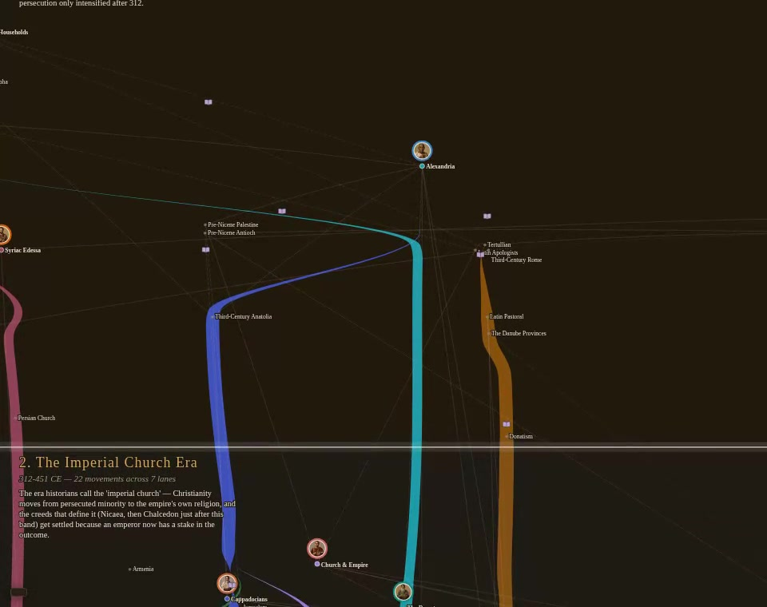
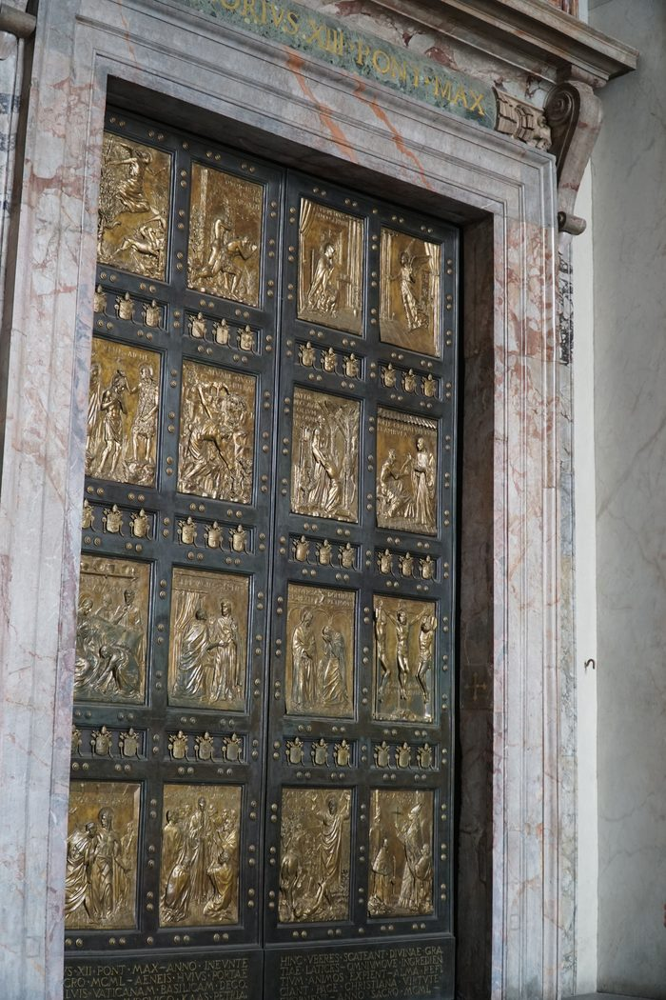

Explore hundreds of historical Christian traditionsand have conversations with representative voices built from their own letters, sermons, and records.

Church Family Tree
An interactive map of Christian tradition, from the first house-churches to today
This map traces the movements, schisms, and revivals of Christian history as rivers that wind and widen across time. Click any name — or any river — to read its story: who carried it, what it believed, and where the account comes from. A growing number of Christian Traditions are fully built, each with its own representative voice you can have a conversation with.
Open Church Family Tree →Conversation with One
An in-depth conversation with a Representative Voice
Choose a representative from one of the several Christian traditions. Each is built from their own letters, sermons, and records. Start the conversation and explore their beliefs, practices, and the challenges they faced.
Who would you like to talk with?
The Early Church Era70–312 CE
-

ChloeHousehold Leader
The Scattered Households (Post-Apostolic Household-Church Christianity)
An uncommon faith in scattered households lived as one body, connected by letters and a shared table. Following Jesus meant loss of status, suspicion from neighbors, and even outright persecution at times. Once the apostles were gone, some were led by a single bishop and elders, others by a council of elders.
Start the conversation → -

TheonCatechetical Teacher
Alexandrian Christianity (Alexandrian Catechetical Tradition)
In Alexandria, from about 150 to 400 CE, teachers led seekers through a shared life of reading Scripture. They believed its surface pointed toward a deeper meaning, one that opened onto the Logos himself. Persecution reached even its own teachers—Origen's own father was martyred while Origen was still a boy. Some called it one continuous school; others say it was simply a series of private teachers, grouped together only in hindsight.
Start the conversation → -

Mar YausepTeacher of the Covenant Order
Syriac Christianity (Syriac Christianity of Edessa and Nisibis)
In Edessa and Nisibis, from 200 to 410 CE, Christians taught their faith in hymn and read Scripture as a world of types answering type. At the community's ascetic core stood the covenant: men and women vowed to celibacy for life who served their own congregation instead of withdrawing to the desert. On the Persian side of the frontier, the king's own persecution took the bishop Simeon bar Sabbae and left the church's chief seat empty for twenty years. Whether authority rested more in that vow or in a bishop's office was never settled in their own record.
Start the conversation →
The Imperial Church Era312–451 CE
-
FidelisBishop of the Unbroken Line
The Church of the Martyrs (Donatism)
In 311/312, Caecilian was consecrated bishop of Carthage by a man accused of surrendering his copy of the scriptures when ordered to — and a rival was consecrated beside him because of it, not in his place. From that day the same see held two bishops at once, two parallel hierarchies contesting town after town across Roman North Africa, each holding its own basilicas and its own unbroken line of ordination. This is the rigorist alternative communion that grew from that refusal: not a doctrinal heresy — its confession is standard North African Latin Trinitarian and Christological orthodoxy — but a communion built on one unyielding conviction, that a tainted hand cannot give what it claims to give. It closes in 439, when a Vandal army took Carthage and removed the Roman state this whole refusal was defined against.
Start the conversation → -

MariusDeacon of the Letters
Church and Empire (Imperial and Juridical Christianity)
In Rome, Constantinople, and Milan, from Constantine's toleration of the church in 312 to the Council of Chalcedon in 451, Christian bishops became office-holders beside a throne rather than outlaws beneath a sword — hearing lawsuits, administering imperial funds, summoned to councils at the emperor's own expense. Three claims to final authority over the church contested that whole century and a half — Rome's claim from Peter, Constantinople's claim from nearness to the throne, and a bishop's claim to stand in moral judgment over any ruler — and the window closed without settling which one was right. This world's own worst hours were not suffered but caused: a bloody contest over the bishopric of Rome, and a massacre an emperor ordered and then, at his own bishop's insistence, did public penance for.
Start the conversation → -

PapnouteAbba (Elder)
Desert Fathers and Mothers (Desert Monasticism)
In the Nile Valley and the desert of Egypt, from about 320 to 430 CE, Christians left their villages to wage a lifelong combat against the thoughts that trouble a person from within. Authority came two ways at once, never resolved: earned through a lifetime of discipline under one elder, or conferred by a written rule and an appointed office. What withdrawal cost was everything ordinary life offered — land, family, the safety of a settled place — surrendered by stages and never reclaimed.
Start the conversation → -

ChiloElder of the Brotherhoods
The Cappadocian Churches (Cappadocian Pastoral-Monastic and Trinitarian Tradition)
The Nicene-confessing churches of Cappadocia and Pontus, from about 325 to 394 CE, were carried by one family and one friendship: Basil of Caesarea, his sister Macrina, his brother Gregory of Nyssa, and Basil's friend Gregory of Nazianzus. A radical ascetic ferment had already dissolved households and turned slaves against masters before Basil built something else instead: brotherhoods bound by rule, obedience, and an open guest-door. Julian's brief pagan revival cost them a martyr at Caesarea in 362; the Homoian church that followed under Valens drove Gregory of Nyssa into exile, before this Nicene minority inherited the empire's favor in 381.
Start the conversation → -
RenatusBishop
The Monk-Bishops of Gaul (Gallic Monastic-Ascetic Christianity)
This is the church of the ascetic bishop and the received wisdom of Egypt, carried west. In the Loire valley, a soldier who left the army gathered followers in the woods and became a bishop who never stopped living like a monk. Two generations later, on an island off the Mediterranean coast and in the city of Marseilles, monks who had lived among the fathers of Egypt built communities that trained abbots and bishops for the churches of southern Gaul. One of them adapted the customs of the Egyptian desert for a colder climate and a different church. Another wrote a rule for telling the true faith from every novelty. Through both households ran one argument, never fully settled: how much of a monk's progress is God's own gift, and how much is his own effort.
Start the conversation → -

AlbinaWidow of the Household
The Bethlehem Circle (Hieronymian Ascetic-Literary Christianity)
In Rome and then Bethlehem, from 382 to 420 CE, a circle of wealthy women and one scholar-priest practiced renunciation and scholarship as a single discipline — fortunes converted into text, hospitality, and care for the sick, a Latin Bible built word by word against the Hebrew it was first written in. The women funded it, founded it, and by Jerome's own account pressed him with scriptural questions for decades; but Jerome wrote nearly every surviving page himself, and how much independent authority his account of them actually reflects is a question this world's own record cannot settle. The cost was concrete: in 384 a daughter of the household died within four months of taking up Jerome's own fasting regime, and Rome's outrage over it helped drive the whole circle out of the city.
Start the conversation →
The Reformation Era1517–1650
-
TheophilusPastor
The Reformed Cities (Zurich & Geneva)
On 1 January 1519, Huldrych Zwingli began preaching straight through the Gospel of Matthew at Zurich's Grossmünster rather than following the fixed lectionary — the first act of a reform that tested every inherited practice against Scripture and kept only what the text would warrant. Geneva's own reform opened separately and was joined in 1536 by John Calvin, whose ministry built a Consistory of pastors and lay elders to hold the whole city's ordinary conduct to account. Zwingli and Calvin never met; what bridges the two cities is the Consensus Tigurinus (1549), two reforms arriving independently at language neither could disown. This pattern continues unbroken into the Scottish Kirk, the Huguenots, the Dutch Reformed, and English Puritanism.
Start the conversation →
Build a Table
Three traditions, one conversation
Join a conversation with up to three Christian traditions from the two-thousand-year story of the church. Ask questions, make comments, and listen to the representatives discuss their views. Watch them draw out where they agree — and where they don't.
Build the table →Keep the Door Open
We believe that encountering the authentic story of the Church broadens how we know Jesus. Help us open the door wide so others can experience this two-thousand-year story of Christ working through His people.
Every contribution directly offsets our operational costs and allows us to welcome more people to the table.

For what this actually costs and where it goes, see Get Involved.
The Unfolding Story
For two thousand years, people have followed Jesus across vastly different worlds and cultures.
They gathered in modest homes and workshops, navigating the suspicion of their neighbors and the pressure of hostile rulers. They followed Him into mountain monasteries and remote deserts, along ancient trade routes across Asia, and into the cathedrals and university halls of Europe. They stood at the stake in Reformation squares, sang through forced labor in colonial fields, knelt in Latin American village chapels, and gathered inside modern churches across the world.
Like the ancient story of Israel, the story of the Church calls for honesty. It is not a tale of heroes who marched in lockstep and got everything right. It is a historically grounded record of real people: wrestling with political power, arguing over hard questions, fracturing, and failing often—proving at every turn that humanity cannot fix itself. Yet God never worked from a safe distance, nor did He wait for people to become perfect before meeting them. He stepped directly into their everyday lives, languages, and cultures, guiding them by His Spirit, shaping their human gifts for His purposes, and using their human hands to heal the fractured and restore His creation.
Through all those scattered eras and divergent paths, each community discovered distinct perspectives of who Jesus is and how to follow Him. You are invited to explore these stories. Trace forgotten routes across a living atlas, uncover the stories that shaped the Church, and pull up a chair with representative voices from across these traditions. In conversation with them, you can hear where they stand in deep agreement, listen as they wrestle with where they see things differently, and discover where your own story connects with theirs.